33の言葉を、たとえ話と絵でやさしく
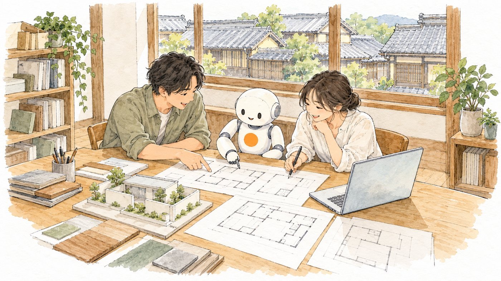
一つの言葉を「ひとことで」→「たとえると（絵）」→「SpaceClipでは」→「覚えておくこと」の順に説明しています。まず絵とたとえ話で全体をつかみ、細かいことは必要になったときに読み返してください。
「AI」がいちばん大きなくくり。ChatGPTやClaudeは、いちばん内側の「LLM」です。
この冊子に無い言葉は、AIに聞くのがいちばんの近道です。
「〇〇という言葉を、建築設計事務所で働く人向けに、たとえ話を1つ入れて3行で説明して」
答えに出てきた固有名詞や数字は、公式の説明で確かめましょう。
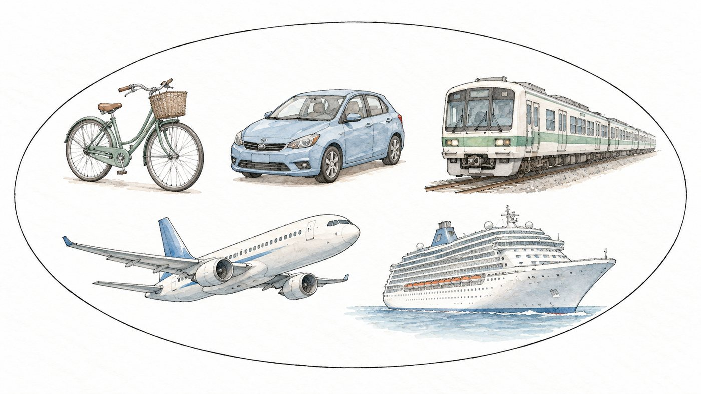
人の知的な作業（見分ける・読む・判断する など）を、コンピューターで行う技術の総称。
「乗り物」のような大きなくくり。自転車も電車も乗り物であるように、生成AIも機械学習も、AIの仲間です。
人がルールを1つずつ書くのではなく、たくさんのデータからパターンを見つけさせる方法。
ベテラン職人の「勘」。何百もの現場を見てきた人は、理由をうまく説明できなくても「この壁は傷みやすい」と分かります。AIはそれをデータで身につけます。
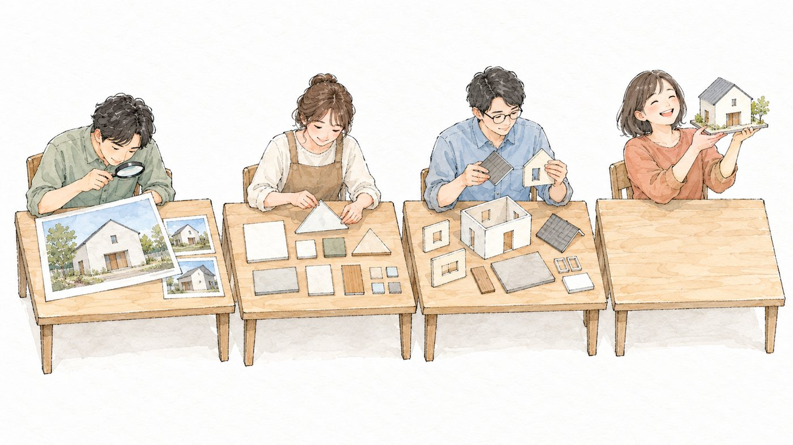
何層もの計算を重ねて、複雑な特徴を自動で見つける機械学習の一種。今のAIの中心となる技術。
流れ作業の検査。1段目は「線」、2段目は「形」、3段目は「窓や屋根」…と段を重ねるほど、細かな特徴から全体を見分けられるようになります。
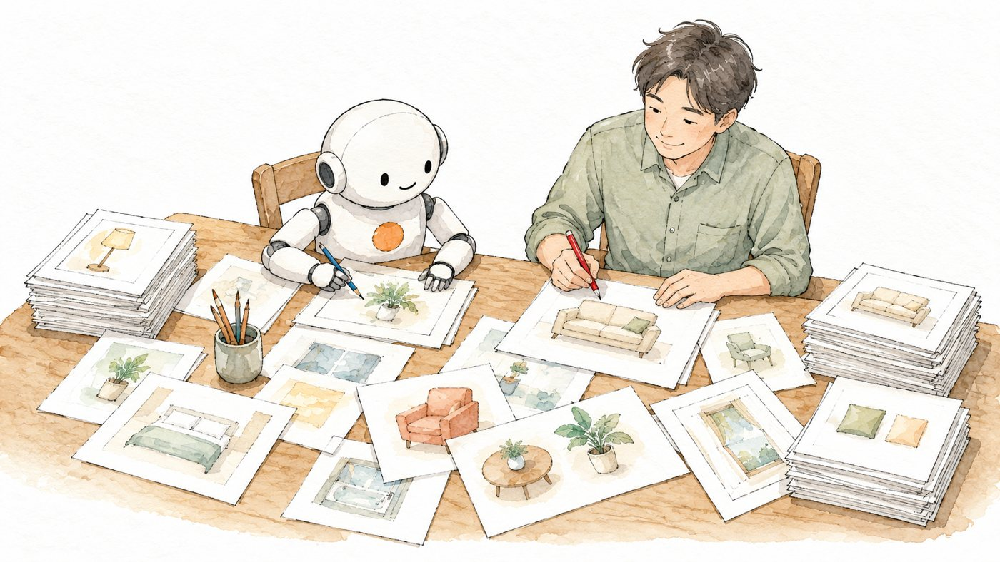
文章・画像・音声などを、新しく作り出すAI。
仕事の早い「新人の書記さん」。頼めばすぐに下書きを作ってくれますが、中身の確認は先輩（人）の仕事です。
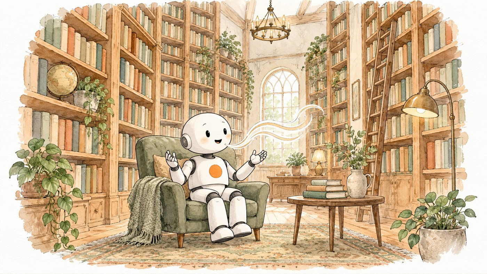
膨大な文章を読んで、言葉のつながりを学んだAI。ChatGPT・Claude・Geminiの中心にあるもの。
図書館の本を何万冊も読んだ「物知りで話し上手な人」。次にどんな言葉が来るかを予想するのが、とても上手です。
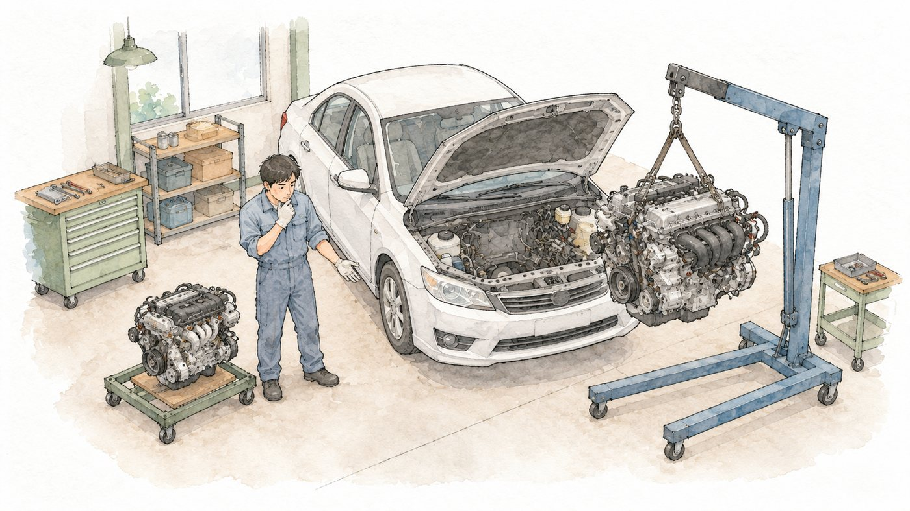
学習によって出来上がった、AIの「頭脳」にあたる部分。アプリの中で実際に考えている本体。
車の「エンジン」。同じ車体（アプリ）でも、積むエンジン（モデル）によって速さや燃費が変わります。
AIが大量のデータからパターンを身につける工程。モデルを作るときに、開発会社が行う。
料理人の「修業時代」。何年もかけてレシピを読み、腕を磨きます。お店を開いてからは、毎日の注文で腕が勝手に上がるわけではありません。
学習を終えたAIが、質問を受けて答えを出す処理。私たちがAIを使うときは、いつも推論をしている。
一人前になった料理人が、お客さんの注文を受けて一皿を作ること。修業（学習）で身につけた腕を、注文（質問）ごとに使います。
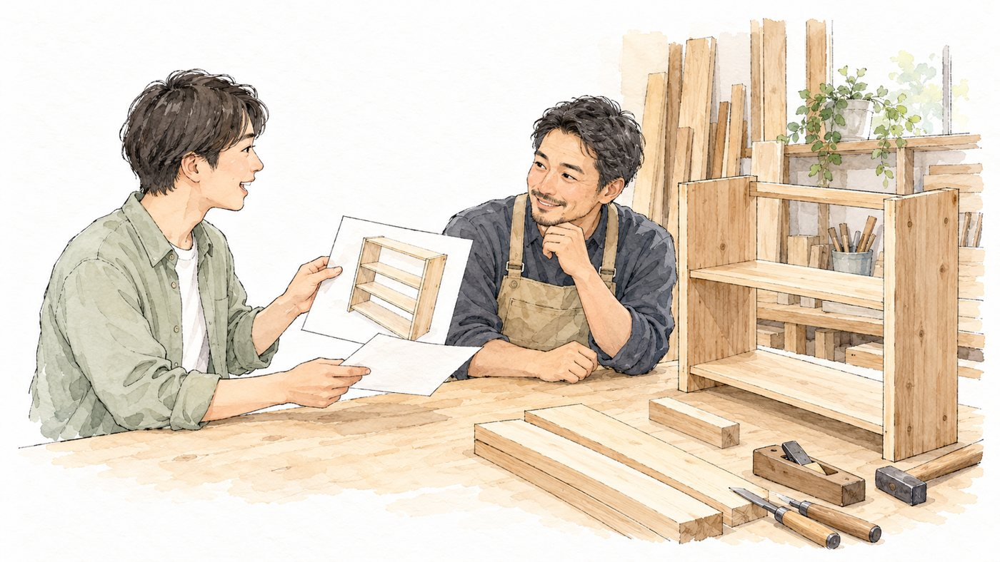
AIに渡す指示や質問の文章。
職人さんへの「発注書」。「棚を作って」だけより、寸法・材料・置き場所・納期まで書くほど、思い通りの物が届きます。
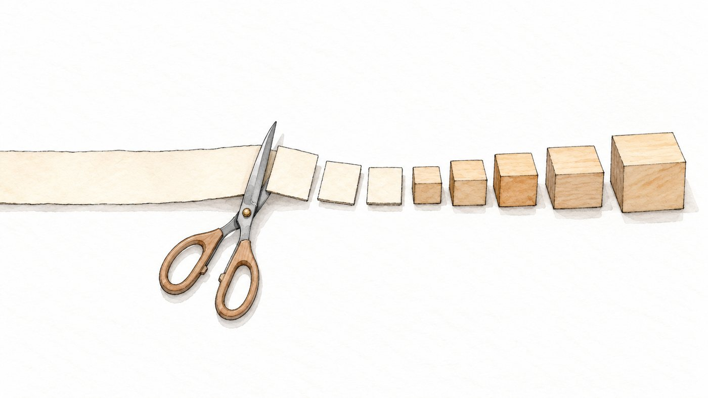
AIが文章を処理するときの、小さな区切りの単位。扱える量や利用料金は、トークンで数える。
文章を細かく切った「ブロック」。AIは文章をひと続きではなく、小さなブロックの並びとして読んでいます。
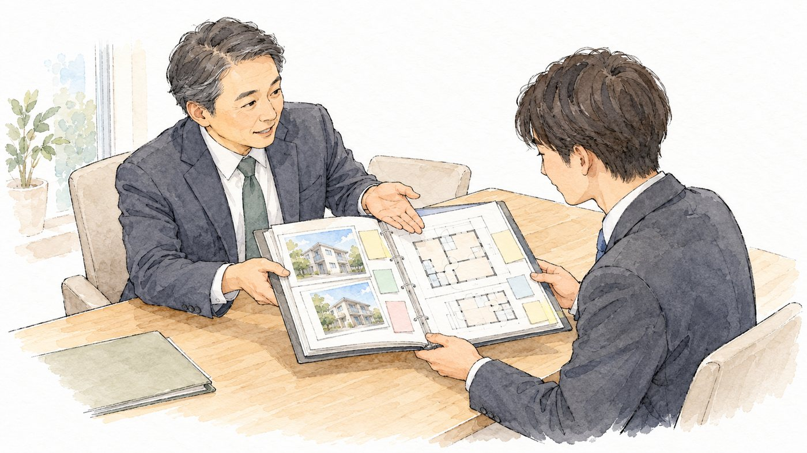
AIが答えるときに手がかりにする、その場の情報。それまでの会話、添付した資料、前提条件など。
打合せ前に渡す「申し送り」。経緯を知らない人にも、背景を伝えてから頼めば話が早く進みます。
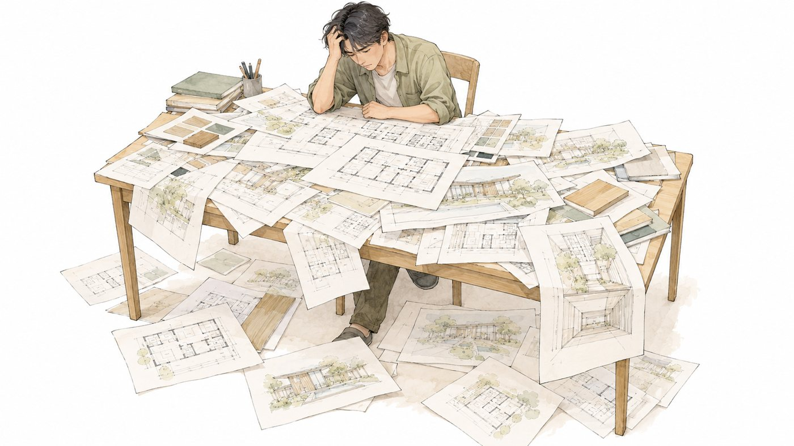
AIが一度に覚えておける情報の量の上限。
「作業机の広さ」。机に広げられる資料には限りがあり、あふれた分は見えなくなります。
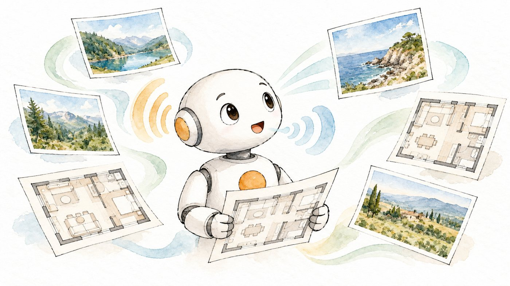
文章だけでなく、画像・音声・PDF・動画など、複数の種類の情報を扱えること。
目と耳と口がそろった人。図面を見て、声を聞いて、言葉で答えられます。
第2章の言葉を一つの流れにすると、こうなります。良い答えをもらうコツは、左側の「プロンプト」と「コンテキスト」をていねいに渡すこと。机（コンテキストウィンドウ）からあふれないよう、要点をしぼって渡すのも大切です。
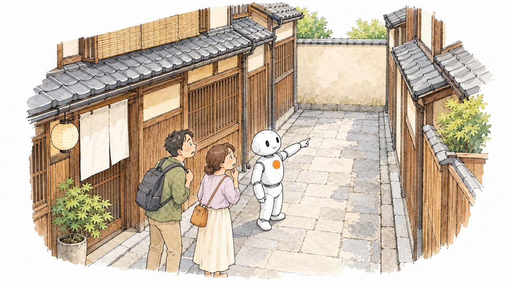
事実と違う内容を、もっともらしく答えてしまうこと。
知ったかぶりの「自信満々な道案内」。知らない道でも、堂々と案内してしまいます。
AIの判断や答えに出る「かたより」。学んだデータのかたよりが、そのまま答えに出る。
色付きの眼鏡。悪気はなくても、眼鏡の色で景色の見え方が変わってしまいます。
入力した内容を、AIの会社が次のモデルの学習に使うかどうか。使わせない設定にすることを「オプトアウト」という。
預けた書類を「コピーして社内の勉強に使ってよいか」という同意。初めの設定のままだと「使ってよい」になっているサービスもあります。
AIが間違った動きや危ない動きをしないように設ける、ルールや制限。
山道のガードレール。ふだんは意識しませんが、道からはみ出しそうなときに止めてくれます。
AIの作業の途中に、人の確認や判断を組み込むこと。
図面の「チェックバック」。担当が描いた図面を、出す前に必ず別の人が赤ペンで確認する流れです。
第3章の言葉は、どれもこの5つに行き着きます。迷ったら、この約束に戻ってください。
仕事に役立つ知識や経験。AIの世界では、答えの参考にさせる資料のことも指す。
ベテランの「虎の巻」。マニュアルには書いていない、経験から生まれたコツです。
知識を整理して、探して使えるようにまとめた保管庫。
よく整理された「資料棚」。見出しが付いていて、誰でも必要な物をすぐに取り出せます。
質問に関係する資料をまず探し出し、その内容をもとにAIが答える仕組み。
「持ち込み可」の試験。記憶だけで答えるのではなく、資料をめくって確かめてから答えます。
AIの答えを、根拠となる資料や事実に結びつけること。
根拠のページに「付せん」を貼って報告してくれる部下。どこに書いてあるかが分かるので、すぐ確かめられます。
文章や画像の「意味」を、数字の並び（地図の上の位置のようなもの）に置き換える技術。
言葉を「地図」の上に置くこと。意味の近い言葉ほど、地図の上で近くに集まります。
言葉が一字一句同じでなくても、意味が近いものを探し出す検索。
気の利く「図書館の司書さん」。「雨の日に読みたい本」と頼めば、題名に「雨」が無くてもぴったりの本を出してくれます。
学習済みのモデルに追加で学習させて、特定の仕事や書き方に合わせること。
中途採用の人が受ける「社内研修」。基本ができる人を、うちのやり方に合わせて仕上げます。
第4章の言葉はつながっています。資料をナレッジベースに整理し、埋め込みとセマンティック検索で関係する所を探し、RAGで答えさせ、出典を示してグラウンディングする。NotebookLMは、この流れをまとめてやってくれる道具です。
目標を伝えると、自分で手順を考え、道具を使いながら作業を進めていくAI。
「お使い」を頼める助手。行き先や買う物を自分で調べ、途中で判断しながら用事を済ませてきます。
AIが、検索・計算・ファイル操作・カレンダーなど、外の道具を使うこと。
「道具箱」を持たせること。手ぶらでは無理な作業も、電卓やメジャーがあればできます。
ソフトウェア同士が、機能やデータをやりとりするための決まった「窓口」。
レストランの「ウェイター」。客は厨房に入らず、決まった形で注文し、料理を受け取ります。
AIを、外のサービス（Gmail・カレンダー・ドライブなど）につなぐための共通の規格。Claudeでは「コネクタ」と呼ぶ。
電源の「共通コンセント」。差し込み口の形がそろっているので、いろいろな機器をすぐにつなげます。
AIに渡しておく「仕事の手順書」。決まった仕事を、毎回同じやり方・同じ品質でこなせるようにする。
事務所の「業務マニュアル」。新人でも、マニュアルを見れば同じ書式で書類が作れます。
学習で出来たモデルの中身（重み）が公開されていて、自分のパソコンやサーバーで動かせること。
「レシピが公開された料理」。お店に行かなくても、自分の台所で作れます。
プログラムを書く・直す・説明するのを、AIに手伝ってもらうこと。
隣に座る「先輩プログラマー」。エラーの原因を一緒に探し、直し方を提案してくれます。
プログラムの中身を細かく読まず、「こうしたい」を言葉で伝え、画面を見ながらAIと作っていくやり方。
腕のいい大工さんに、その場で見ながら「ここに棚がほしい、もう少し低く」と伝えて作ってもらうこと。
| No. | 用語 | ひとことで |
|---|---|---|
| 01 | AI（人工知能） | 人の知的な作業（見分ける・読む・判断する など）を、コンピューターで行う技術の総称。 |
| 02 | 機械学習 | 人がルールを1つずつ書くのではなく、たくさんのデータからパターンを見つけさせる方法。 |
| 03 | ディープラーニング | 何層もの計算を重ねて、複雑な特徴を自動で見つける機械学習の一種。今のAIの中心となる技術。 |
| 04 | 生成AI | 文章・画像・音声などを、新しく作り出すAI。 |
| 05 | LLM（大規模言語モデル） | 膨大な文章を読んで、言葉のつながりを学んだAI。ChatGPT・Claude・Geminiの中心にあるもの。 |
| 06 | モデル | 学習によって出来上がった、AIの「頭脳」にあたる部分。アプリの中で実際に考えている本体。 |
| 07 | 学習（トレーニング） | AIが大量のデータからパターンを身につける工程。モデルを作るときに、開発会社が行う。 |
| 08 | 推論 | 学習を終えたAIが、質問を受けて答えを出す処理。私たちがAIを使うときは、いつも推論をしている。 |
| 09 | プロンプト | AIに渡す指示や質問の文章。 |
| 10 | トークン | AIが文章を処理するときの、小さな区切りの単位。扱える量や利用料金は、トークンで数える。 |
| 11 | コンテキスト | AIが答えるときに手がかりにする、その場の情報。それまでの会話、添付した資料、前提条件など。 |
| 12 | コンテキストウィンドウ | AIが一度に覚えておける情報の量の上限。 |
| 13 | マルチモーダル | 文章だけでなく、画像・音声・PDF・動画など、複数の種類の情報を扱えること。 |
| 14 | ハルシネーション | 事実と違う内容を、もっともらしく答えてしまうこと。 |
| 15 | バイアス | AIの判断や答えに出る「かたより」。学んだデータのかたよりが、そのまま答えに出る。 |
| 16 | データの学習利用（オプトアウト） | 入力した内容を、AIの会社が次のモデルの学習に使うかどうか。使わせない設定にすることを「オプトアウト」という。 |
| 17 | ガードレール | AIが間違った動きや危ない動きをしないように設ける、ルールや制限。 |
| 18 | ヒューマン・イン・ザ・ループ | AIの作業の途中に、人の確認や判断を組み込むこと。 |
| 19 | ナレッジ | 仕事に役立つ知識や経験。AIの世界では、答えの参考にさせる資料のことも指す。 |
| 20 | ナレッジベース | 知識を整理して、探して使えるようにまとめた保管庫。 |
| 21 | RAG（検索拡張生成） | 質問に関係する資料をまず探し出し、その内容をもとにAIが答える仕組み。 |
| 22 | グラウンディング | AIの答えを、根拠となる資料や事実に結びつけること。 |
| 23 | 埋め込み（エンベディング） | 文章や画像の「意味」を、数字の並び（地図の上の位置のようなもの）に置き換える技術。 |
| 24 | セマンティック検索 | 言葉が一字一句同じでなくても、意味が近いものを探し出す検索。 |
| 25 | ファインチューニング | 学習済みのモデルに追加で学習させて、特定の仕事や書き方に合わせること。 |
| 26 | AIエージェント | 目標を伝えると、自分で手順を考え、道具を使いながら作業を進めていくAI。 |
| 27 | ツール呼び出し | AIが、検索・計算・ファイル操作・カレンダーなど、外の道具を使うこと。 |
| 28 | API | ソフトウェア同士が、機能やデータをやりとりするための決まった「窓口」。 |
| 29 | MCP（コネクタ） | AIを、外のサービス（Gmail・カレンダー・ドライブなど）につなぐための共通の規格。Claudeでは「コネクタ」と呼ぶ。 |
| 30 | スキル | AIに渡しておく「仕事の手順書」。決まった仕事を、毎回同じやり方・同じ品質でこなせるようにする。 |
| 31 | オープンウェイト | 学習で出来たモデルの中身（重み）が公開されていて、自分のパソコンやサーバーで動かせること。 |
| 32 | AIコーディング支援 | プログラムを書く・直す・説明するのを、AIに手伝ってもらうこと。 |
| 33 | バイブコーディング | プログラムの中身を細かく読まず、「こうしたい」を言葉で伝え、画面を見ながらAIと作っていくやり方。 |